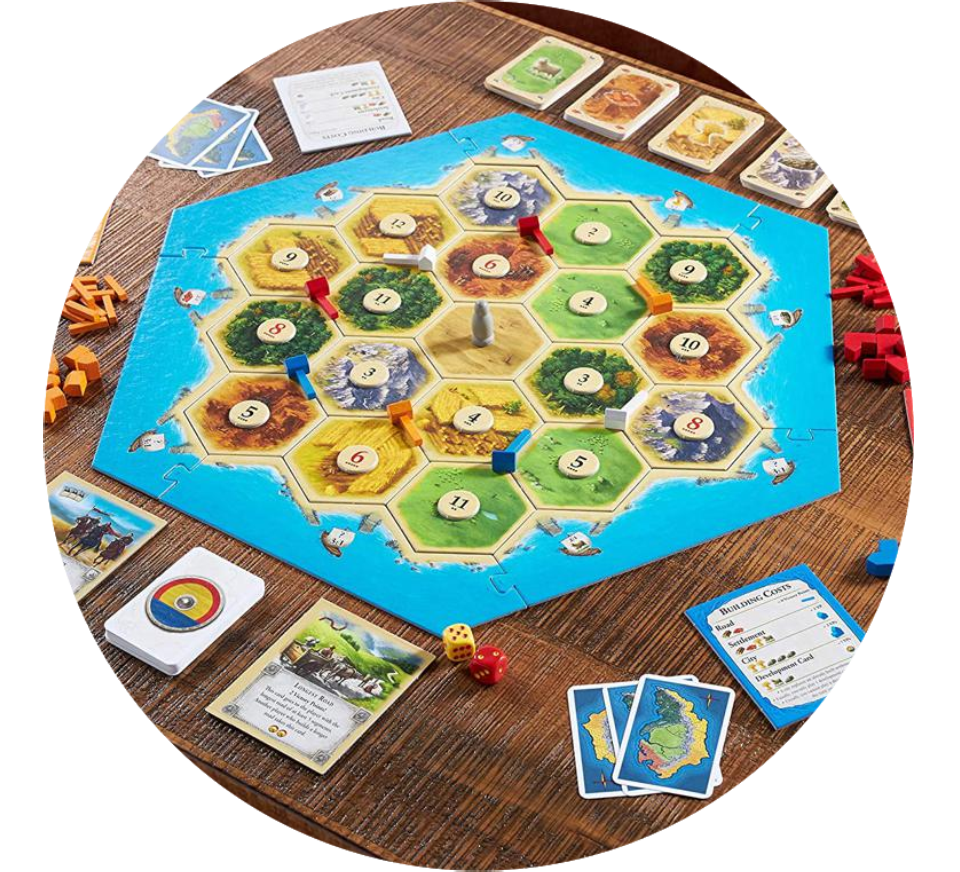
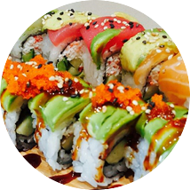
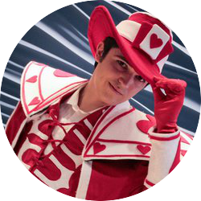

Curtis Who?
Curtis enjoys to slow things down in his life. He'll work hard so that he can take the saved time and take the scenic route home. He loves technology and to tinker with things. Some see him as a nerd, and his glasses certainly don't help! But he's accepted that fact years ago and doesn't skip a beat. He has this weird obsession with food, especially the sushi and desserts. He has a similar obsession with puns, it has caused him to see language as a unique media. He is also often told he's a relatively positive person (especially for having a more cynical humor), a compassionate guy, and finds a lot of pleasure in creating smiles.
Some Hobbies

Board Gamess

Sushi
Steampunk
